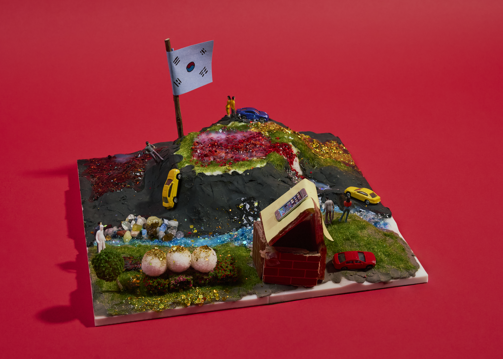

제7구역: ㅁㅁ ㅌㄴㅇㅇㅌMars 5
지구인 분석 결과
● 지구인이 가져올 기술
1. 정보통신기술: 지구의 정보를 습득하기 위해 영상 통화, 영상 시청
2. 농경술 : 다양한 영양소 섭취를 위해 필수
● 지구인의 약점
1. 산소 필요
2. 에너지 필요, 다양한 영양분 섭취 필요
3. 화성에서는 슈트에 의존 (배터리 3일 사용가능)
4. 나르시시스트 성향에 의한 고립과 외로움
화성인으로서의 입장
온건한 수용주의, 평화
인간의 기술력 및 군사력과 화성인이 과거에 화성을 탐사하러 온 인간을 말살한 전범을 종합적으로 고려하여, 인간에게 핵전쟁으로 황폐화된 지구 대신에 살아갈 공간을 제공하고, 그 대가로 과학기술들을 수용하기로 했습니다. 지구인과 화성인은 화성의 깨끗한 자연환경을 최대한 유지하는 방향으로 공존합니다.
전략명: 평화 수립 계획
인간의 강대한 기술력과 군사력을 감당히기엔 화성인이 너무 약하다고 판단되어 화성의 자연환경을 최대한 보존하는 방향으로 개발하는 조건에 따라 지구의 과학기술을 수용하면서 화성의 자연환경을 지키는 수교를 맺기로 했습니다. 지구에서는 화성을 정복하자는 목소리와 수교하자는 두 가지 의견이 나왔지만 적극적으로 수교를 주장한 끝에 평화적인 수교를 성공적으로 맺어 인간과의 공존에 성공하였습니다.
화성은 지구와 어느 정도 비슷한 모양새를 갖게 되었습니다. 집과 푸른 모습이 아름답게 보입니다. 더 이상의 갈등은 없습니다.
곡 제목: Coexistence of Peace(공존)
red ground 피어난 red flower no pain no war
우리는 평화를 노래해 peace peace mars peace!
폐허로 변한 이 유토피아에 평화에 씨앗을 뿌려
황폐해진 이 공기 속에 생명을 불어넣어
공존 공존 coexistence we are together
red ground 피어난 red flower no pain no war
우리는 평화를 노래해 peace peace mars peace!
we are peace of angel
우리는 평화를 이뤄 평화에 이어
저 너머를 향해 we are blooming
Coexistence of peace 에이이이~~ yo!
빛을 잃었던 하늘 위로
새로운 내일이 번져가
손을 맞잡아 하나 되어
희망의 노래를 불러가
No more tears, no more cries
We can see the sunrise
너와 내가 함께라면
끝없는 내일을 만들어
공존 공존 coexistence
We stand together hand in hand
Love and hope forever shine
We will never fade away
Red ground, blooming red flower
No pain, no war
우리는 평화를 노래해
Peace, peace, Mars, peace!
넘어진 꿈을 다시 세워
메마른 땅에 꽃을 피워
저 별 너머 미래까지
우리의 마음을 이어가
We are blooming
Into the brighter sky
영원히 함께 노래해
Coexistence of peace!